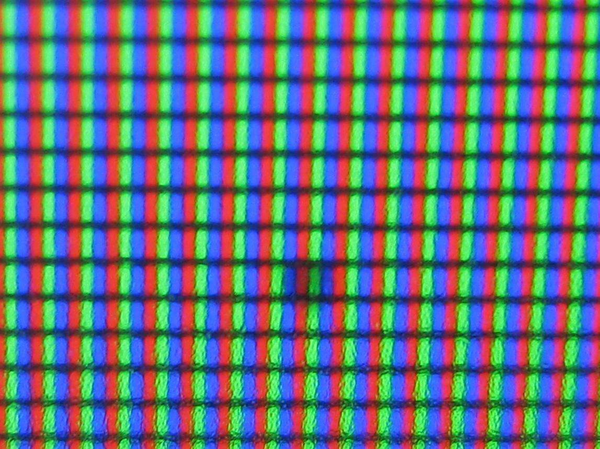
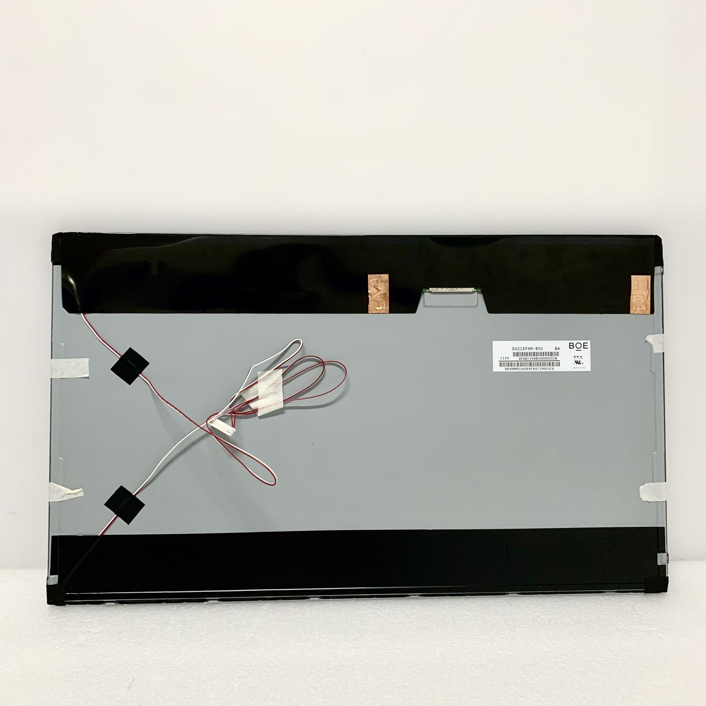
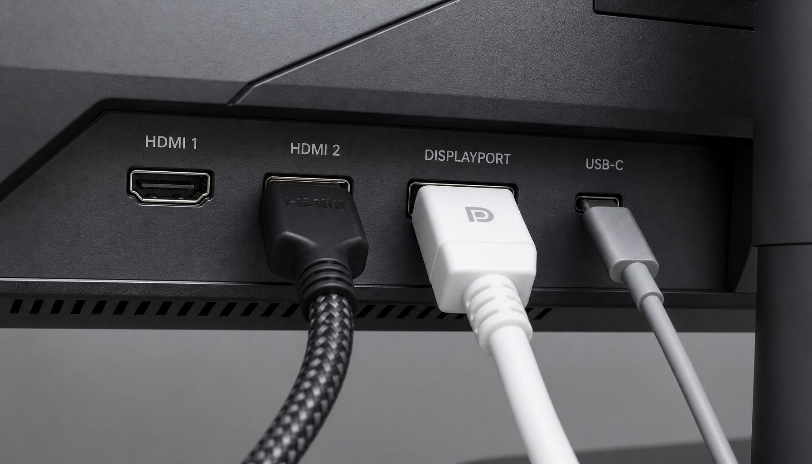
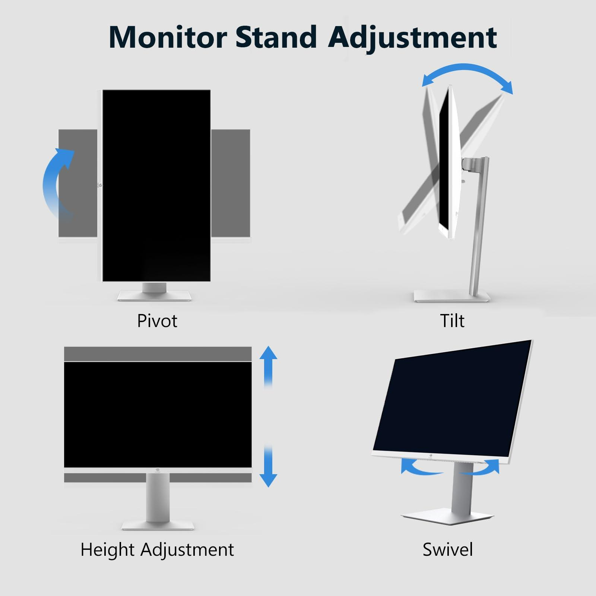
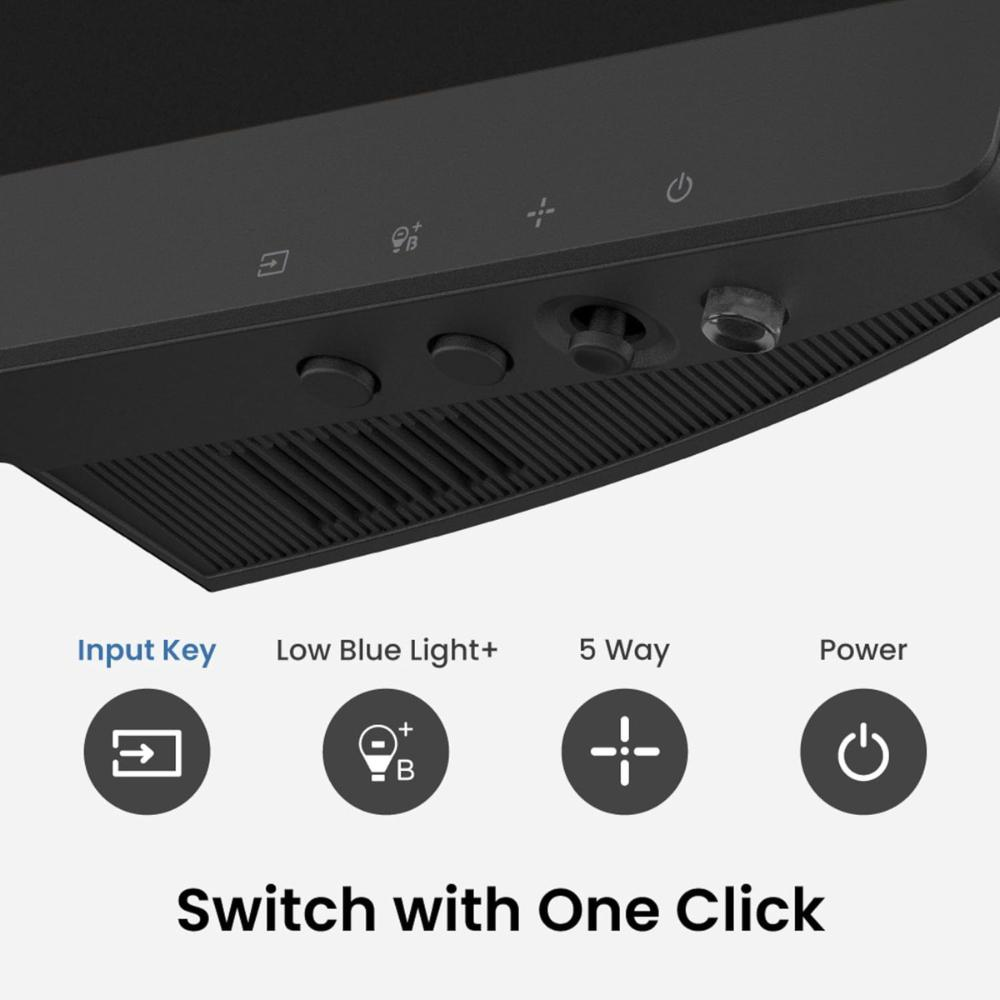
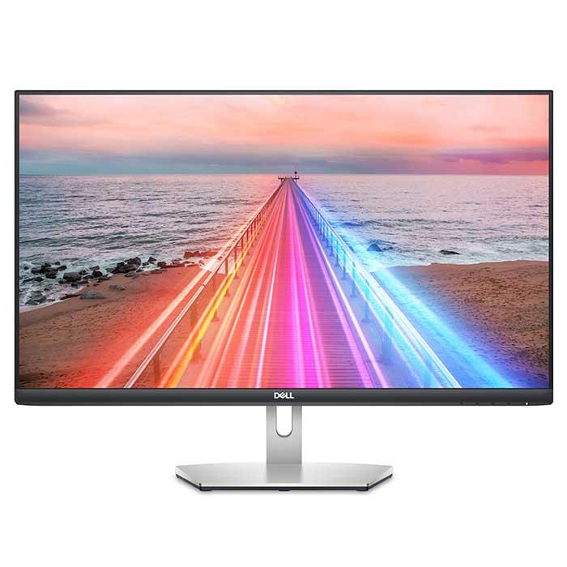
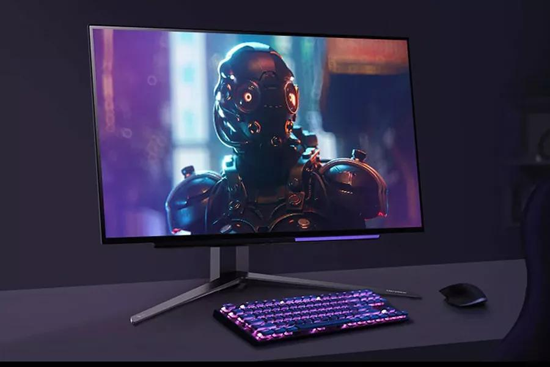
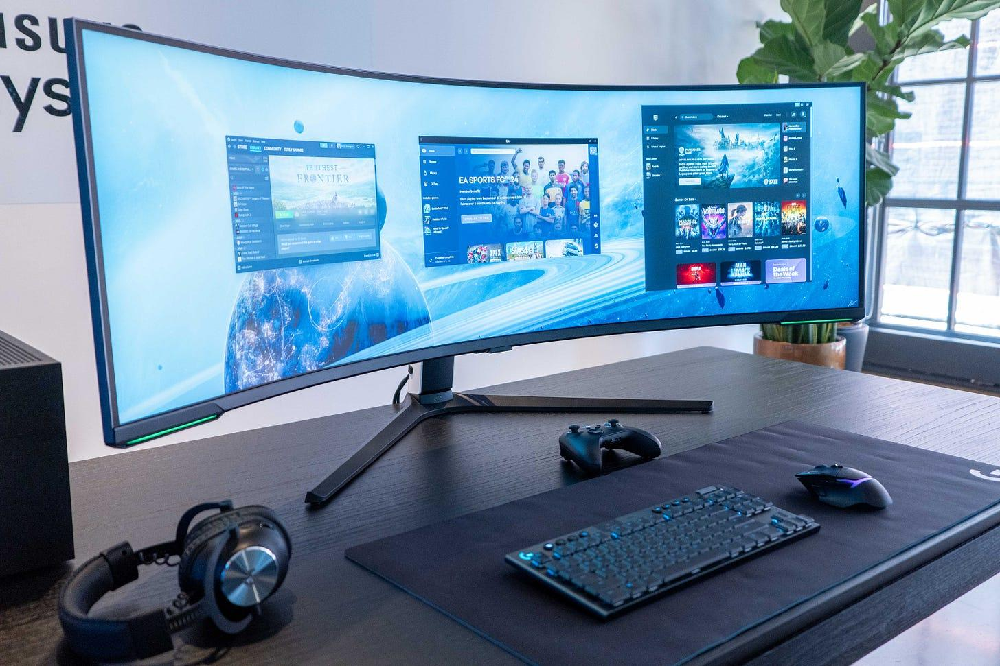
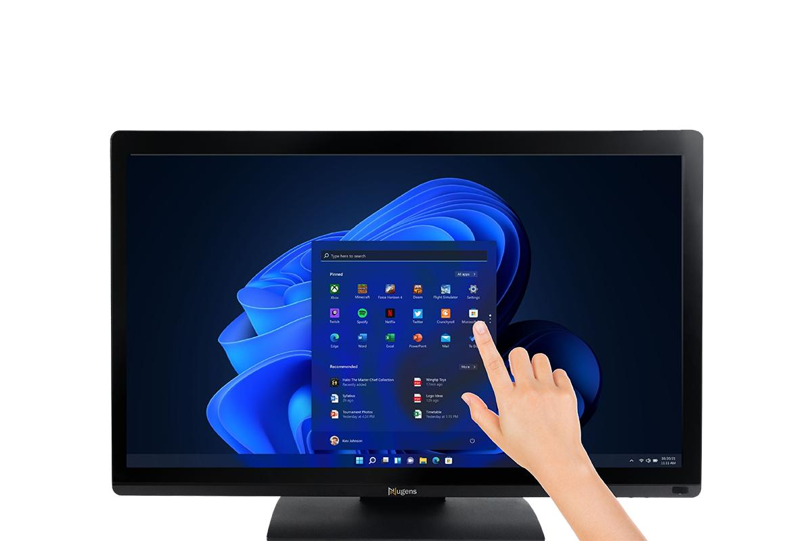
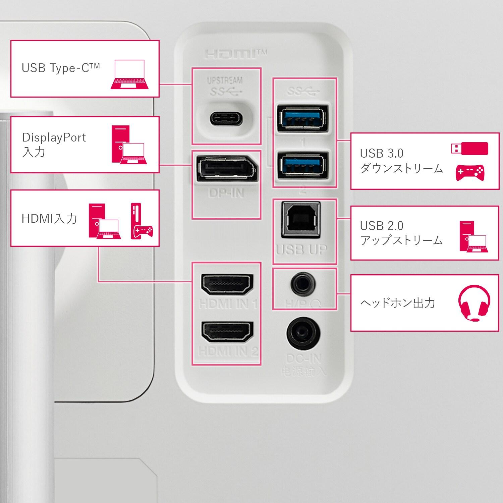

CURATED COLLECTION
電腦螢幕
Monitor
一、什麼是電腦螢幕？
電腦螢幕（Monitor），又稱為「顯示器」，是電腦重要的輸出設備，主要負責將電腦處理後的資訊，以文字、圖片、影片等方式顯示出來。
透過螢幕，使用者可以觀看電腦畫面、操作軟體、瀏覽網頁、觀看影片及玩遊戲。
二、電腦螢幕的主要功能
- 顯示畫面： 將電腦運算後的資料轉換成可觀看的影像。
- 呈現文字： 顯示檔案、網頁、電子郵件及各種文字資訊。
- 播放影音： 顯示影片、動畫及遊戲畫面。
- 協助操作： 讓使用者透過畫面瞭解電腦目前的執行狀態。
- 支援多工： 透過大尺寸螢幕或多螢幕組態，同時觀看多個程式視窗。
三、電腦螢幕的主要構造

1. 顯示面板
螢幕最重要的部分，負責呈現文字、圖片與影像。常見技術有 LCD 和 OLED。

2. 背光模組
LCD 螢幕通常需要背光提供亮度，讓使用者能看見畫面；OLED 螢幕則不需要獨立背光。

3. 影像輸入接孔
常見有 HDMI、DisplayPort 及 USB-C，用來接收電腦傳送的影像訊號。

4. 支架與底座
用來支撐螢幕，部分產品可調整高度、傾斜角度及旋轉方向。

5. 電源與控制按鈕
用來開關螢幕，並調整亮度、對比度、色彩及輸入來源等設定。
四、電腦螢幕的種類

1. LCD 液晶螢幕
利用液晶控制光線來顯示影像，現代產品通常採用 LED 背光，價格與規格選擇多樣。

2. OLED 螢幕
每個像素可以自行發光，具有高對比度、深黑色及快速反應等特色，但價格通常較高。

3. 曲面螢幕
螢幕表面呈現彎曲形狀，常見於大型或超寬螢幕，提供不同的觀看體驗。

4. 觸控螢幕
除了顯示畫面之外，也可以透過手指或觸控筆直接操作，兼具輸入與輸出功能。
五、電腦螢幕的重要規格
規格 |
說明 |
|---|---|
螢幕尺寸 |
常見有 24、27、32 吋等 |
解析度 |
影響畫面的細緻程度 |
更新率 |
影響畫面更新的流暢度 |
反應時間 |
影響像素變換速度 |
亮度 |
影響畫面的明亮程度 |
色彩表現 |
影響顏色的準確性與豐富程度 |
常見螢幕解析度
解析度 |
像素數量 |
特色 |
|---|---|---|
Full HD（1080p） |
1920 × 1080 |
適合文書、上網 |
QHD（1440p） |
2560 × 1440 |
畫質較細緻，適合遊戲與工作 |
4K UHD |
3840 × 2160 |
高解析度，適合影像處理與高畫質內容 |
常見螢幕更新率
- 60Hz： 適合一般文書處理、上網及觀看影片。
- 75～100Hz： 畫面比 60Hz 更流暢，適合日常使用。
- 144～180Hz： 常見於遊戲螢幕，適合需要流暢畫面的遊戲。
- 240Hz 以上： 適合追求高更新率的競技遊戲玩家。
六、電腦螢幕的連接方式

常見的螢幕連接介面包括：
- HDMI： 可以傳輸數位影像與聲音，廣泛使用於電腦、電視及遊戲主機。
- DisplayPort（DP）： 常見於電腦顯示卡與高更新率螢幕。
- VGA： 較舊的類比影像傳輸介面，現代螢幕已較少使用。
- USB-C： 部分設備可透過 USB-C 傳輸影像，但必須確認連接埠與線材是否支援影像輸出。
七、使用電腦螢幕的注意事項
- 保持適當距離： 眼睛與螢幕建議保持約 50～70 公分，並依螢幕大小調整。
- 調整螢幕亮度： 避免畫面過亮或過暗，以減少眼睛不適。
- 注意使用時間： 長時間使用電腦時，應適度休息眼睛。
- 保持清潔： 使用柔軟的超細纖維布清潔螢幕，避免刮傷面板。
- 調整螢幕高度： 讓螢幕上緣約與眼睛同高或稍低，保持舒適的觀看姿勢。
八、總結
電腦螢幕是重要的輸出設備，主要負責將電腦處理後的資訊轉換成使用者能夠觀看的影像。
不同種類的螢幕具有不同的解析度、更新率、顯示技術及功能，可以依照文書處理、遊戲娛樂或影像設計等需求進行選擇。
螢幕就像是電腦的「視覺窗口」，讓使用者能夠看見電腦執行的結果，並透過畫面與電腦互動。
簡單來說：電腦螢幕負責「顯示文字、圖片與影片」，是人們操作和使用電腦時不可或缺的重要設備。